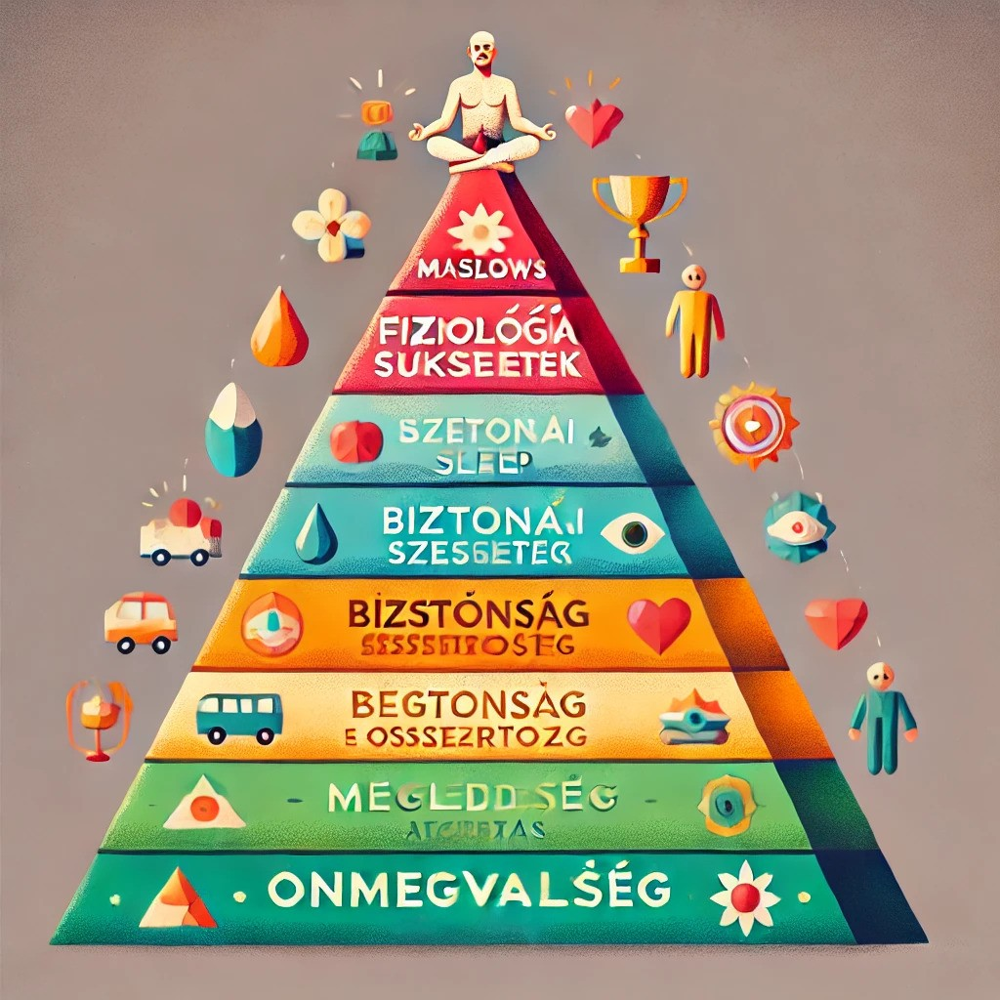
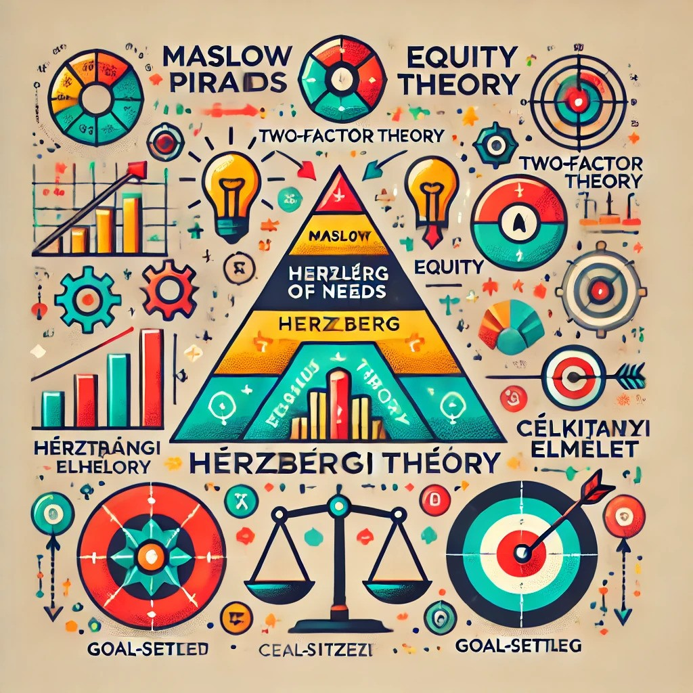
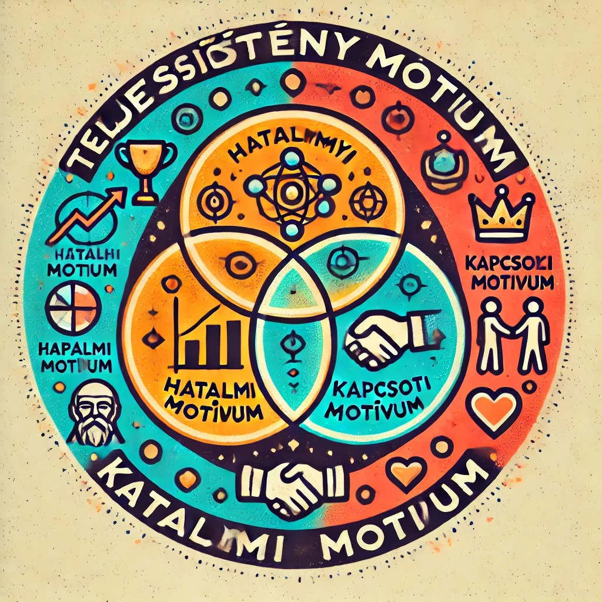
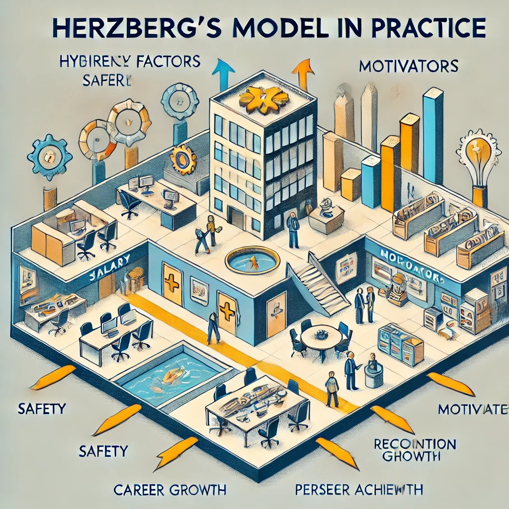

Önismeret és készségek 2

Bemutatkozás
Üdvözlünk a F4NT4STIC weboldalonán! Csapatunk négy lelkes és tehetséges tagból áll: Halász Ádám, Tóth Marcel, Kiss Milán és Polyák Olivér. Mindannyian elkötelezettek vagyunk a kreativitás, az innováció és a minőségi munkavégzés iránt.
Ez a weboldal a közös munkánk eredménye, amelyet azzal a céllal hoztunk létre, hogy bemutassuk összetartó csapatunk erejét.
Legyen szó designról, fejlesztésről vagy ötletelésről, minden egyes részletet gondosan megterveztünk, hogy egyedi és "professzionális" élményt nyújtsunk.

Feladatmegosztás
A Weboldal szerkesztést Halász Ádám és Polyák Olivér csinálta. Ádám a szövegeket írta át és formázta meg Olivér pedig a weboldallal foglalkozott amibe Ádám szintúgy besegített amikor gondok voltak.
A quizeket Tóth Marcell és Kiss Milán csinálta.
Githubra való feltöltést Halász Ádám csinálta és adta át a kódot a többi csapattagnak.

Önismeretek
Ezen az oldalon találhatóak a munkáink!


.jpg)
Önszabályozás
Ezen az oldalon találhatóak a munkáink!


Motiváció
Ezen az oldalon találhatóak a munkáink!
A Belső és külső motiváció
A Maslow-féle szükségletpiramis
A Motivációs elméletek
A Három alapvető motívum
A Hatalom motiváció
A McClelland-féle értelmezés csoportmunka során
A Társulási motiváció
A Teljesítmény motiváció
Az Eltérő motívumok viszonya egymáshoz
A Herzberg-féle modell a gyakorlatban
A Higiénés tényezők

A Motivátorok
A Munkahelyi elégedettség